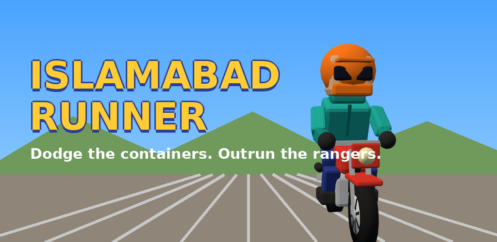
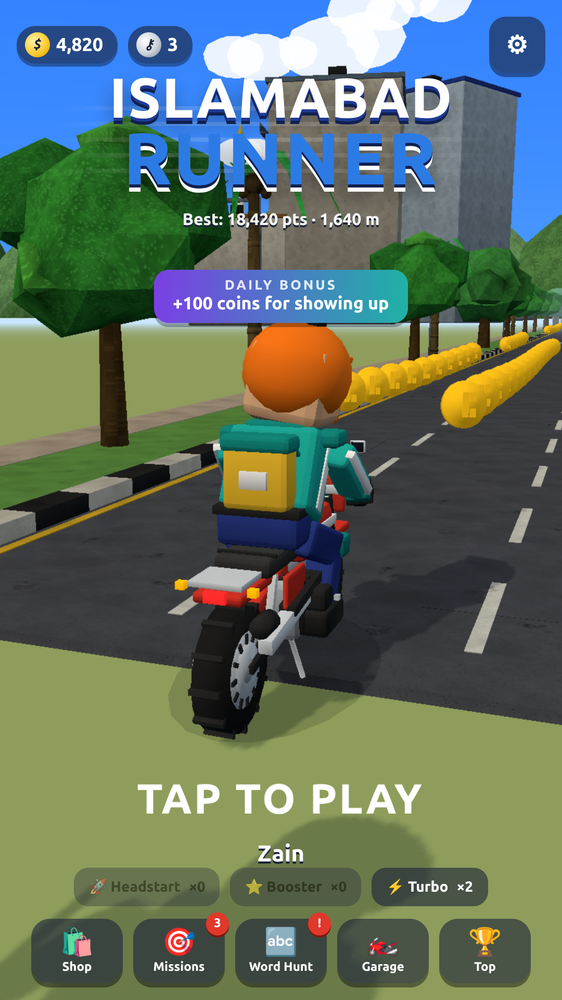
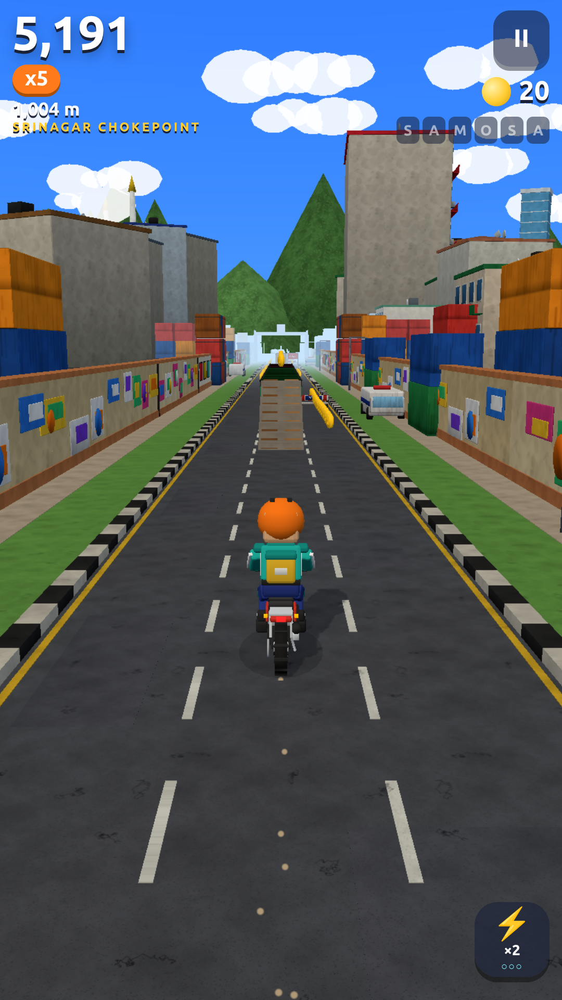
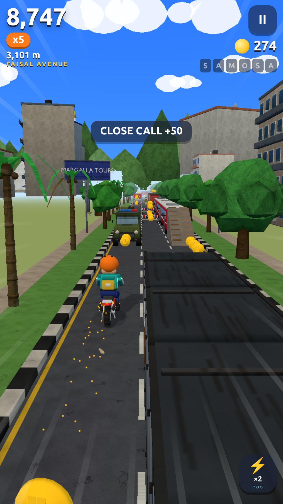

Containers, rangers, teargas and no mobile internet. You're a courier on a Honda 70, and you're going to D-Chowk anyway.

Play in your browser Privacy policy



A Subway-Surfers-style 3D endless runner with an Islamabad protest-day skin: swipe between lanes, jump police barricades, duck under ROAD CLOSED signs, ride container roofs, collect signal bubbles for Turbo, and outrun the rangers from Faisal Avenue to D-Chowk. Seven riders, six bikes, fifty mission sets, daily Word Hunt, badges.
Free. Fully offline. No ads, no in-app purchases, no accounts, no data collected.
Issues and questions: github.com/oyekamal/islamabad-runner